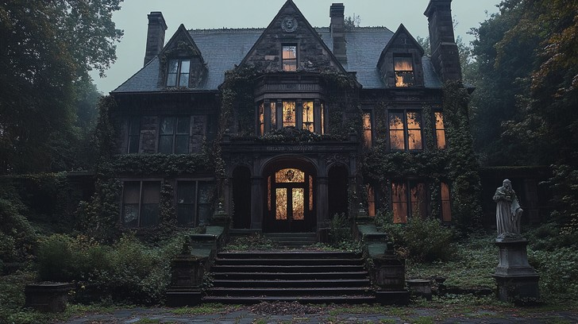

Art . Architecture . Culture
THE BEAUTY OF FORGOTTEN PLACES
Finding Beauty in things Time Leaves Behind

There is something fascinating about places that time seem to have forgotten and abandoned house and overgrown garden or an old building. Slowly, returning to nature can tell a story that modern architect rarely captures.
Beauty in Imperfection
We often associate beauty with perfection. Clean lines. Polished surfaces and carefully maintain spaces are celebrated everywhere. But sometimes the most interesting things are the ones that have been allowed to age.
Peeling paint, weathered, wood faded, wallpaper, and tangled vines create textures and details that cannot Simply be manufactured every crack every imperfection Becomes part of the story.

When Nature Takes Over
one of the most beautiful things about forgotten places It's watching nature slowly, reclaim them trees grow Through broken fences, Mosque covers forgotten stone work, And flowers find their way through the cracks in concrete.
what was once carefully controlled become something entirely different. There's quite a contrast between things people build, and the natural world that eventually surrounds them.
sometimes the most beautiful stories are found in the places everyone else has stopped looking

Preserving the Past
Old buildings and forgotten spaces are more than just structures. They are reminders of different generations, different lifestyle, and the people who wants filled them with life.
preserving these places, allows us to appreciate the craftsmanship, creativity and history that came before us.
Finding Inspiration in the Forgotten
The next time you pass an old house, I forgotten garden Or a Weather building take a moment to look closer notice The details, the textures and the way the light falls across the surfaces.
Beauty does not always have to be new perfect or untouched Sometimes it is found in the imperfect things that have survived.